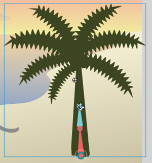
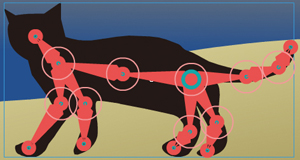

一定學得會！Flash 動畫範例學園
作者：施威銘研究室著
書號：F9423
附件：附1片光碟片
定價：299 元
骨塊工具的應用：隨風搖曳的椰子樹
充滿南國風味的海邊, 椰子樹被風吹得搖曳生姿, 火紅的落日讓海面呈現一片波光粼粼, 連路過的黑貓都停下腳步, 慵懶的享受著這一片美景。底下要運用骨塊工具來幫椰子樹和黑貓建立骨架, 稍後只要調整骨架, 即可讓椰子樹、貓尾巴自然搖曳的動畫效果哦！
| 快速前往 |
Step 1 - 建立椰子樹骨架
Step 2 - 製作椰子樹搖曳動畫
Step 3 - 製作搖著尾巴的黑貓
教學影片
Step 1 - 建立椰子樹骨架
請雙按舞台上的椰子樹, 進入椰子樹的元件編輯模式。接著就選取工具面板上的骨塊工具, 由椰子樹的底部按下左鈕並向上拉曳, 一段距離後放開左鈕, 即可建立出第一塊骨塊：
 接著在上一個骨塊末端按下左鈕, 建立第 2 個骨塊來接續前一個骨塊。 請依此類推, 重覆以上操作, 即可完成椰子樹骨塊的架構。
接著在上一個骨塊末端按下左鈕, 建立第 2 個骨塊來接續前一個骨塊。 請依此類推, 重覆以上操作, 即可完成椰子樹骨塊的架構。

Step 2 - 製作椰子樹搖曳動畫
在繪製骨塊之後, 時間軸面板上的椰子樹圖層會變成空白, 上方則會自動建立一個「骨架」圖層, 我們將在這個圖層上進行骨塊動畫的調整動作。首先 請選取骨架圖層的影格 60, 按右鈕執行『插入姿勢』命令 (等同插入關鍵影格的意思), 讓影格 60 與影格 1 的內容相同。
接著再將播放磁頭移至影格 30, 按右鈕執行『插入姿勢』命令, 我們將在此影格調整椰子樹的動作。
 目前播放磁頭仍在影格 30, 請切換至選取工具, 並將指標移至椰子樹骨塊的關節 (骨塊上的大圓圈處) 上, 如下調整, 即可做出椰子樹被風吹拂的樣子。
目前播放磁頭仍在影格 30, 請切換至選取工具, 並將指標移至椰子樹骨塊的關節 (骨塊上的大圓圈處) 上, 如下調整, 即可做出椰子樹被風吹拂的樣子。
調整好後請按下 [Enter] 鍵播放時間軸的動畫效果, 若不滿意可再拉曳關節進行調整, 完成後, 再按下工作區域左上角的「場景 1」 鈕結束元件編輯模式。
Step 3 - 製作搖著尾巴的黑貓
接續上例, 我們再利用「骨塊工具」替畫面前的黑貓做出搖尾巴的動作吧！首先 請選取「貓」圖層, 再按下工具面板的骨塊工具, 由黑貓的腹部為起點, 為黑貓的頭、尾巴、四肢建立出骨塊, 繪製好的骨塊架構如下所示。

 請確認目前已切換至「貓」圖層上方的骨架圖層, 然後將播放磁頭移至影格 60, 按下右鈕執行『插入姿勢』命令, 此時影格 1 和影格 60 的動作是相同的。
請確認目前已切換至「貓」圖層上方的骨架圖層, 然後將播放磁頭移至影格 60, 按下右鈕執行『插入姿勢』命令, 此時影格 1 和影格 60 的動作是相同的。
 接著將播放磁頭移至影格 30, 按下右鈕執行『插入姿勢』命令, 並切換至選取工具, 參考下圖調整黑貓的尾巴位置 (向上揚起)。
接著將播放磁頭移至影格 30, 按下右鈕執行『插入姿勢』命令, 並切換至選取工具, 參考下圖調整黑貓的尾巴位置 (向上揚起)。

完成後按下 [Ctrl] + [Enter] 鍵預覽動畫, 看似困難的動畫就輕鬆完成了。
TIP： 本單元介紹的骨塊工具, 最適合用於建立類似關節連動的效果, 像是走路、跳舞、擺動手腳等動作, 運用骨塊工具即可快速製作出來。你也可以試著利用骨塊工具, 讓範例中的黑貓向前行走哦！
TEL：02-2396-3257
Copyright © 2012 Flag Piblishing Co.,Ltd. All Rights Reserved.